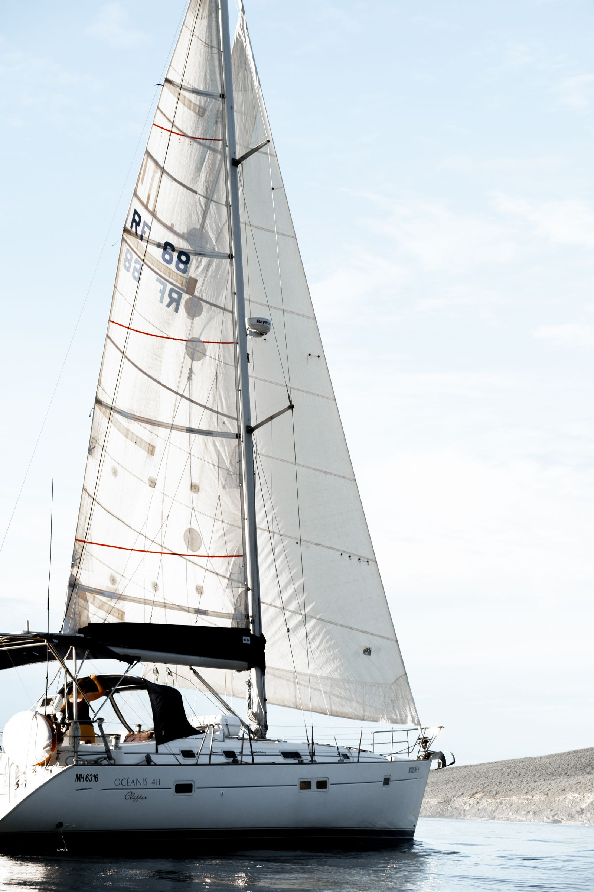
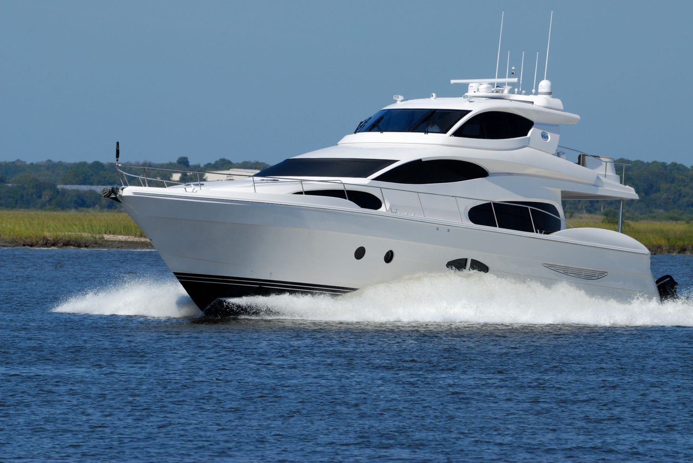
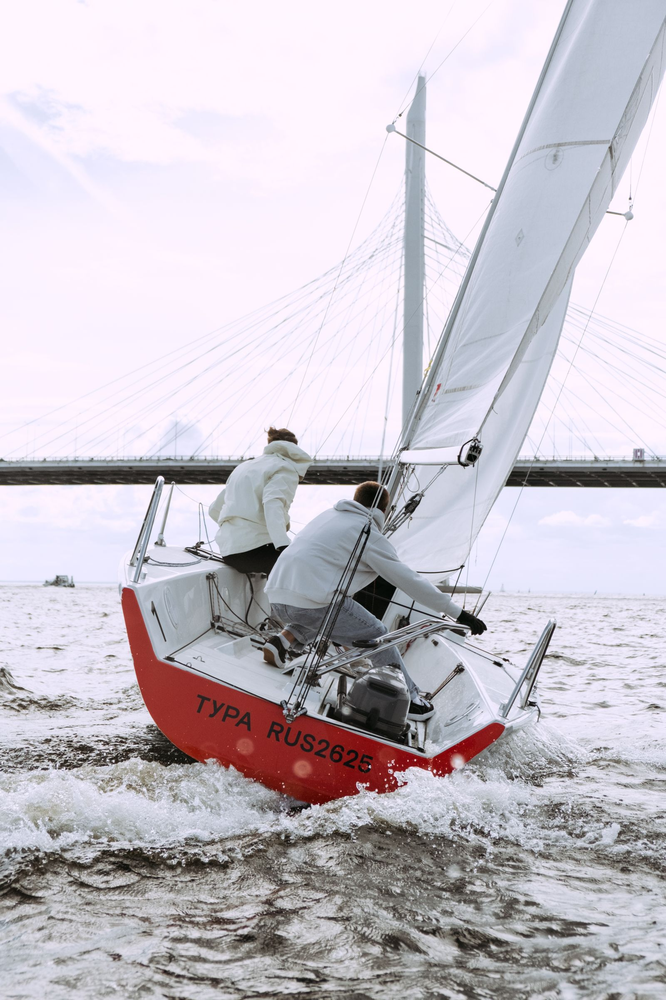

Yachts drawn honestly. Every figure states its conditions.
Byrne Naval Architecture designs sailing and motor yachts of 12 to 40 metres from a one-woman office in Cowes. On this site a range is quoted at a named speed with the reserve still in the tank, a displacement says which load case it is, and a top speed says what the boat was carrying when she did it. A number with no conditions attached is marketing. We don’t print those.

The register — three designs, figures as they stand
Toggle the drawing layers.The numbers are below each sheet.
BNA 24 “Meridian”
| Length overall | 23.80 m |
|---|---|
| Length, waterline | 21.94 m |
| Beam | 5.85 m |
| Draft | 3.20 m, fixed fin |
| Displacement, half load | 31.6 t (design 31.2 t, +1.3% as inclined) |
| Ballast | 11.4 t lead |
| Construction | Aluminium, welded |
| Design category | CE Category A |
| Sail area, upwind | 312 m² |
|---|---|
| Sail area, downwind | 486 m² |
| Engine | 150 hp diesel |
| Fuel / water | 1,800 L / 1,200 L |
| Top speed under power | 10.1 kn (predicted 10.4 kn — measured figure stands) |
| Range under power | 759 nm at 7.5 kn, 10% reserve — try the slider below |
| Berths | 8 guests in 4 cabins + 2 crew |
| First season | 6,200 nm: Cowes – Azores – Caribbean |
The honest dial — what speed costs, on Meridian
Drag the speed. Burn figures are her measured sea-trial numbers; range is worked on 1,620 litres — the 1,800-litre tank less the 10% reserve this office contracts on every range figure it prints.
Conditions: displacement from the inclining experiment at handover, half load (half fuel, half water, crew of two, cruising stores). Speed measured over a two-way measured-mile run, clean bottom, sea state 2. Where a figure on this sheet has been corrected since launch, the correction is printed in red and the original left visible in the case study.
BNA 32 “Halcyon”
| Length overall | 31.50 m |
|---|---|
| Length, waterline | 28.60 m |
| Beam | 7.40 m |
| Draft | 1.95 m |
| Displacement, full load | 168 t (contract figure) |
| Construction | Steel hull, aluminium superstructure |
| Classification | Built to class; society named in the contract, not the brochure |
| Build cost band | €11–13 m, as contracted 2024 |
| Engines | 2 × 1,200 hp diesels |
|---|---|
| Top speed | 21.5 kn (contract figure: half load, clean bottom, sea state 1) |
| Cruising speed | 12 kn |
| Range at 12 kn | 2,300 nm, 10% reserve |
| Range at 21.5 kn | 610 nm — the same tank, at flank speed |
| Fuel | 28,000 L |
| Guests / crew | 10 in 5 cabins / 5 |
| Status, Nov 2026 | Hull complete; fit-out at month 14 of 26 |

Conditions: every figure for Halcyon is a contract figure until delivery. At handover she gets the same treatment as Meridian — inclining experiment, measured runs, and the measured figures replace these on this sheet, in red where they differ. That is the deal on every design in this register.
BNA 18 “Wren”
| Length overall | 17.90 m |
|---|---|
| Beam | 5.10 m |
| Draft | 3.40 m down · 2.10 m up |
| Displacement, half load | 24.8 t (design figure — never inclined, because never built) |
| Construction | Aluminium, ice-belt plating at the waterline |
| Intended use | High-latitude expedition, crew of four |
| Client budget | €1.40 m |
|---|---|
| Feasibility build estimate | €2.05–2.30 m at the specified standard |
| De-scoped version offered | €1.55 m — fixed keel, no ice belt |
| Client decision | Stopped. Bought a used aluminium yacht instead |
| Fees this office earned | Feasibility + concept stages only |
| Full account | Case 03, The Work |
Conditions: Wren’s figures are design-stage estimates, labelled as such. They are printed here because the feasibility numbers — not the rendering — are the work product the client paid for.
How a design proceeds
Five stages. Each ends withdocuments you keep either way.
-
01
Brief & feasibility
We argue about the brief before we draw anything: where the boat will actually go, who will actually crew her, what the money actually is.
You receivePrincipal particulars, a weight estimate at ±10%, a build-cost band — and a written list of what this boat will not do.
-
02
Lines & hydrostatics
The hull is drawn and its numbers run: displacement by load case, stability curves, the first speed and range predictions.
You receiveLines plan, general arrangement, sail or power plan, preliminary stability curves, and the first honest range table.
-
03
Design development
Structure, systems and specification, worked to the standard a yard can price and a surveyor can check.
You receiveScantlings to class rules, structural drawings, systems schematics, the full stability book, and the specification book.
-
04
Build support
Weight is where yacht designs go to lie. Ours is controlled in the open, in a log the client can read at any time.
You receivePlan approval, five yard visits at agreed hold points, and the weight-control log — every change over 5 kg weighed and entered.
-
05
Trials & handover
The boat is inclined, measured and run. The predicted figures come off this website; the measured ones go on.
You receiveThe witnessed inclining experiment, measured speed runs, and the as-measured table that replaces the predicted one — in red where they differ.
What it costs
Fees published beforeyou have to ask.
| Service | Basis | Fee | Notes |
|---|---|---|---|
| Brief & feasibility package | Fixed fee | £7,500 | Credited in full against the design fee if the design proceeds. Yours to keep if it doesn’t — that is the point of it. |
| Full design — sailing yacht | % of build contract value | 6.5% | Minimum £85,000. Percentage is of the build contract, not the finished value with the options list added. |
| Full design — motor yacht | % of build contract value | 5.5% | Minimum £110,000. Systems engineering is the larger share of a motor yacht; the percentage is lower, the hours are not. |
| Weight audit & refit engineering | Day rate + report | £950 / day | Includes the inclining experiment and a stability book that matches the boat as she actually is. See Case 02. |
| Owner’s representation at build | Day rate | £950 / day | Hold-point inspections and the weight log, reported to the owner — not to the yard. |
This office takes no commission from yards, engine agents, sailmakers or equipment suppliers. If one is offered, it is disclosed to the client in writing and credited against our fee. A design office that is paid by both sides of a build contract has a reason to keep quiet; the fee table above is structured so that we don’t.
From the owners of Meridian
Testimonials here are attachedto the boat they are about.
“Every designer we interviewed gave us a top speed. Aoife gave us a top speed, the load case, the sea state — and a promise to publish the measured figure even if it embarrassed her. It did, by 0.3 of a knot, and she published it. That is the whole reason the boat is as good as she is.”
J. & P. Hartley — owners, BNA 24 “Meridian” · 6,200 nm in her first season · Read the case study

Start with the feasibility package.
£7,500 fixed. You receive the numbers — including the ones that might stop the project. Especially those.